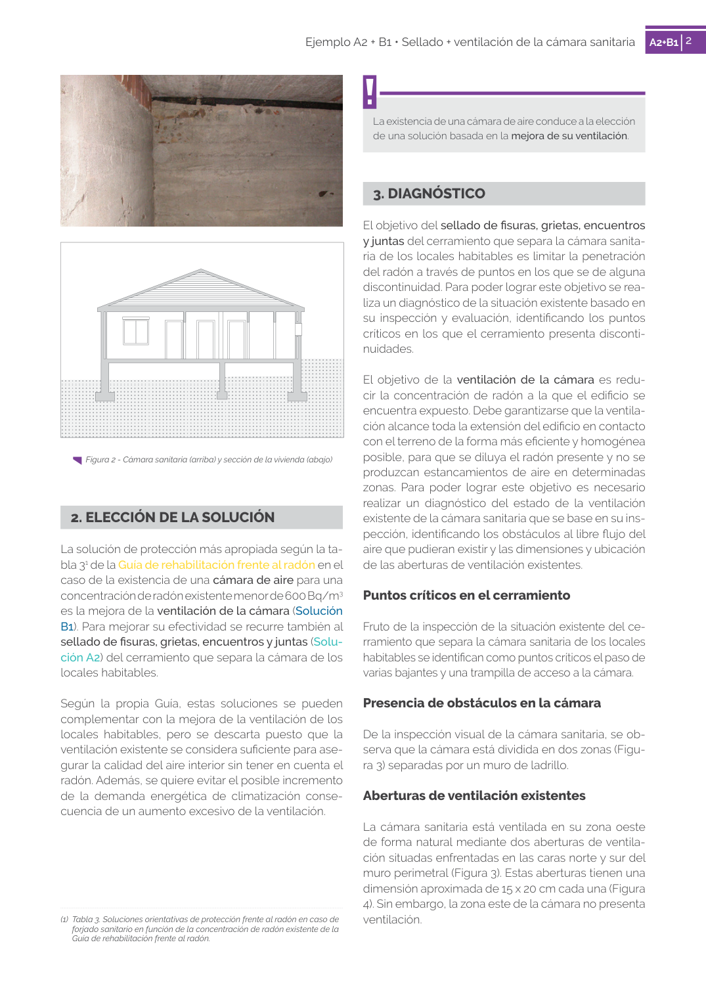

Ejemplo A2 B1 Sellado ventilacion de la camara sanitaria · edición 2019 · capa guia
Documento GUIA-PDF-39b41477de9d · SHA-256 del PDF fe666105504166eb540ca95d1f7591b53a4265882fc1352b75c196e67ce098ae
Copia fiel del PDF fuente · Fuente oficial
Ficha de la disposición en la fuente oficial
Créditos y autoría en el PDF fuente. Reproducción con cita de fuente y autores.
Permiso literal: Se permite la reproducción total o parcial del contenido de este do Edición actual: septiembre 2020 cumento siempre y cuando se cite la fuente original y a sus autores.
Ejemplo A2 + B1 • Sellado + ventilación de la cámara sanitaria A2+B1 55
Este documento ha sido elaborado por el Instituto de ciencias
de la construcción Eduardo Torroja (IETcc) bajo la supervisión
de la Dirección General de Agenda Urbana y Arquitectura del
Ministerio de Transportes, Movilidad y Agenda Urbana (MITMA).
El IETcc, perteneciente al Consejo Superior de Investigaciones
Científicas (CSIC), es el centro de investigación en edificación
de referencia en España. La Unidad de Calidad en la Construc
ción del IETcc asesora al MITMA en la elaboración del Código
Técnico de la Edificación que, desde el año 2019, cuenta con la
sección HS6 Protección frente a la exposición al radón.
SECRETARÍA GENERAL DE
AGENDA URBANA Y VIVIENDA MINISTERIO GOBIERNO DE TRANSPORTES, MOVILIDAD Dirección y Coordinación: DE ESPAÑA Y AGENDA URBANA DIRECCIÓN GENERAL DE
AGENDA URBANA Y ARQUITECTURA Ministerio de Transportes, Movilidad y Agenda Urbana
Isabel Marcos Anasagasti
Raquel Lara Campos
MINISTERIO GOBIERNO DE CIENCIA DE ESPAÑA E INNOVACIÓN Eduardo González de Prado
Instituto de ciencias de la construcción Eduardo Torroja CSIC
Pilar Linares Alemparte
Autoras:
Esta ficha forma parte de una serie de documentos englobados Pilar Linares Alemparte
en una misma publicación, cuyo objetivo es constituir una he Sonia García Ortega
rramienta de ayuda para el diseño de soluciones de protección
frente al radón: Diagnóstico y diseño de la solución:
Tania Zapata Viñuelas · CIEMAT
■ Guía de rehabilitación frente al radón
Jesús Díaz García · CIEMAT
Fichas de soluciones:
Asesoría técnica:
A: De aislamiento del edificio Pilar Linares Alemparte
■ Solución A1. Barrera frente al radón
■ Solución A1-1. Barrera frente al radón. Encuentros Ejecución material de la obra:
■ Solución A2. Sellado de fisuras, grietas, encuentros y juntas Centro de Investigaciones Energéticas, Medioambientales y
■ Solución A3. Puertas estancas Tecnológicas · CIEMAT
■ Solución A4. Creación de sobrepresión
Edita:
B: De reducción del radón antes de que penetre en los locales Centro de Publicaciones Secretaría General Técnica
a proteger Ministerio de Transportes, Movilidad y Agenda Urbana©
■ Solución B1. Ventilación del espacio de contención: cá Entidad colaboradora:
mara de aire Consejo Superior de Investigaciones Científicas · CSIC
■ Solución B2. Ventilación del espacio de contención: loca Ministerio de Ciencia e Innovación
les no habitables
■ Solución B3. Despresurización del terreno Catálogo de publicaciones de la Administración General
del Estado: publicacionesoficiales.boe.es
C: De reducción del radón tras penetrar en los locales a proteger
■ Solución C1. Ventilación de los locales habitables Centro virtual de publicaciones del Ministerio de Transpor
tes, Movilidad y Agenda Urbana: www.mitma.gob.es
Fichas de ejemplos:
Página web del Código Técnico de la Edificación:
■ Ejemplo A1+B3. Barrera frente al radón + despresurización www.codigotecnico.org
con red de tubos
■ Ejemplo A2+B1. Sellado + ventilación de la cámara sanitaria Maquetación y diseño gráfico:
■ Ejemplo A2+B3. Sellado + despresurización con red de tubos Lapizmente. Estrategia • Diseño Gráfico
■ Ejemplo A2+C1. Sellado + ventilación mecánica de los loca- Los contenidos o ideas recogidas en este documento pertenecen a
les habitables sus autores. Este documento está basado en el conocimiento dispo
nible en el momento de su publicación. No se aceptará por las institu
Publicación completa: ciones ni los autores implicados responsabilidad de ningún tipo por el
ISBN: 978-84-498-1045-9 uso de estas recomendaciones. Las figuras tienen carácter ilustrativo
NIPO: 796-20-136-5 y no deben interpretarse como detalles constructivos.
1ª edición: septiembre 2020 Se permite la reproducción total o parcial del contenido de este do
Edición actual: septiembre 2020 cumento siempre y cuando se cite la fuente original y a sus autores.Formatos: JSON del segmento · Markdown
2. ELECCIÓN DE LA SOLUCIÓN La solución de protección más apropiada según la ta bla 31 de la Guía de rehabilitación frente al radón en el caso de la existencia de una cámara de aire para una concentración de radón existente menor de 600 Bq/m3 es la mejora de la ventilación de la cámara (Solución B1). Para mejorar su efectividad se recurre también al sellado de fisuras, grietas, encuentros y juntas (Solu ción A2) del cerramiento que separa la cámara de los locales habitables. Según la propia Guía, estas soluciones se pueden complementar con la mejora de la ventilación de los locales habitables, pero se descarta puesto que la ventilación existente se considera suficiente para ase gurar la calidad del aire interior sin tener en cuenta el radón. Además, se quiere evitar el posible incremento de la demanda energética de climatización conse cuencia de un aumento excesivo de la ventilación. La existencia de una cámara de aire conduce a la elección de una solución basada en la mejora de su ventilación.
